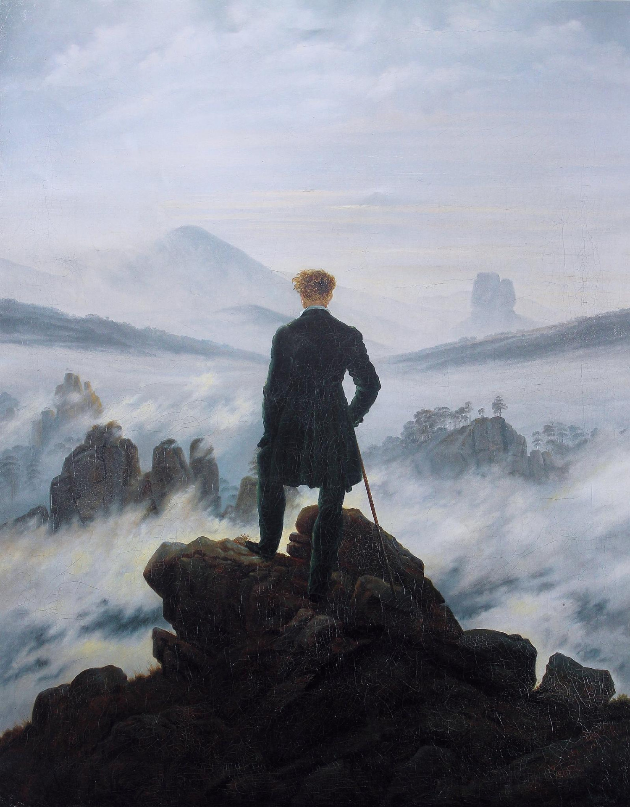

CHAPTER 3 · 파편적 데이터에서 맥락성 정보로
방관자가 된 인간 — Human Out-of-the-Loop
카스파르 다비트 프리드리히, 〈바닷가의 수도승〉 (1810) · 거대한 시스템 앞의 무력함과 고립

카스파르 다비트 프리드리히, 〈안개 바다 위의 방랑자〉 (1818) · 통제하고 있다는 착각, 가려진 현실
In-the-Loop→On-the-Loop→Out-of-the-Loop
거부권을 스스로 반납할 때, 인간은 통제자가 아니라 안개 바다를 바라보는 방관자가 된다